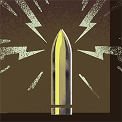
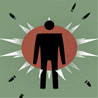
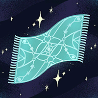
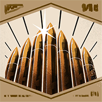
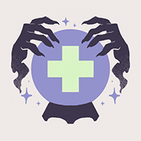

Helden › Mystiker
Seven
Seven ist ein spielbarer Held in Deadlock. Die Schutzzauber von sieben Nationen sollten seine Seele bei der Hinrichtung auslöschen. Sie versagten. Seven lachte — und machte sich auf den Weg nach New York.
Hintergrund
Als die mystische Energie auf der Erde erwachte, veränderte sich die Welt … alles war möglich. Aber nur weil alles möglich WAR, hieß das nicht, dass alles möglich sein SOLLTE. Also machte die Regierung Regeln. Gesetze. Doch Regeln und Gesetze sind für geringere Männer. Männer mit Grenzen. Männer, die nicht Seven waren.
Es gibt viele Gerüchte darüber, was Seven nach Lost Whisper brachte — ein Verlies für die gefährlichsten Okkultisten. Aber es gibt keinen Zweifel daran, was in der Nacht seiner Hinrichtung geschah: Schutzzauber, errichtet von den mächtigsten Ritualisten aus sieben Nationen — entworfen, um jede mystische Einmischung zu verhindern und Sevens Seele gleich mit auszulöschen — versagten.
Zeugen sahen entsetzt zu, wie der stärkste Mentalist der US-Armee zerbrach und der Okkult-Ermittler von Scotland Yard zu Asche zerfiel. Sevens Körper bäumte sich gegen die Fesseln auf, seine Haut brannte unter arkaner Elektrizität … und doch starb er nicht. Er lachte. Er lachte, als er sich losriss. Er lachte, als seine Peiniger sich duckten. Und er lachte, als er daran dachte, was er tun würde, sobald er New York erreichte.
Spielstil
Seven gedeiht im Scharmützel und wartet auf den richtigen Moment. Dann rollt er wie ein Gewitter in den Kampf und prasselt mit einer Kaskade aus Blitzen auf seine Gegner ein — bis hin zur alles verzehrenden Sturmwolke.
Fähigkeiten
Lightning Ball
Taste 1Verschießt eine Blitzkugel, die auf gerader Linie rollt und alle Ziele in ihrem Radius schockt.
Abklingzeit: 26 s
Static Charge
Taste 2Belegt einen Gegnerhelden mit statischer Ladung, die nach kurzer Zeit alle im Umkreis betäubt und schädigt.
Abklingzeit: 42 s
Power Surge
Taste 3Elektrisiert die Waffe: Schüsse lösen Schockschaden aus, der auf Gegner in der Nähe des Ziels überspringt.
Abklingzeit: 50 s
Storm Cloud
Taste 4 UltimateKanalisiert eine wachsende Gewitterwolke, die alle Gegner im Radius unter Strom setzt.
Abklingzeit: 205 s
Basiswerte
| Wert | Basis (Stufe 1) | Kategorie |
|---|---|---|
| Maximale Gesundheit | 730 | Vitalität |
| Gesundheitsregeneration | 1 / s | Vitalität |
| Lauftempo | 6,7 m/s | Bewegung |
| Sprint-Bonus | +1,8 m/s | Bewegung |
| Ausdauer | 3 | Bewegung |
| Leichter Nahkampfschaden | 50 | Waffe |
| Schwerer Nahkampfschaden | 116 | Waffe |
Beliebte Builds
Diese Daten stammen direkt aus dem Build-Browser im Spiel: die drei meistfavorisierten Builds für Seven, sortiert nach der Zahl der Spieler, die sie gespeichert haben. Klick einen Build an, um die Item-Reihenfolge zu sehen.
№1 Seven Ultimate Build V1.5 02.05 433.656 Favoriten
„Build by Desh steamcommunity.com/id/DeshByL1ght/ - my steam Deshbyl1ght - discord https://discord.com/channels/1231286446472691825/1270867872343658598 - thread on official discord“














№2 Seven Ultimate Build V1.5 09.05 (test) 433.507 Favoriten
„Build by Desh steamcommunity.com/id/DeshByL1ght/ - my steam Deshbyl1ght - discord https://discord.com/channels/1231286446472691825/1270867872343658598 - thread on official discord“



№3 Seven Ultimate Build V1.5 01.04 433.435 Favoriten
„Build by Desh steamcommunity.com/id/DeshByL1ght/ - my steam Deshbyl1ght - discord https://discord.com/channels/1231286446472691825/1270867872343658598 - thread on official discord“


Warum sind das die besten Builds?
Die drei Builds wurden zusammen über 1.300.598-mal von Spielern gespeichert — Favoriten sind das stärkste Qualitätssignal im Build-Browser, denn ein Build, den so viele Spieler über Monate und Patches hinweg behalten, hat sich in echten Matches bewährt. Die Builds mischen alle drei Kategorien — ein Zeichen dafür, dass Seven flexibel gespielt wird und je nach Matchup Waffe, Überleben oder Fähigkeiten priorisiert. Als Einstieg gilt: Folge der Item-Reihenfolge des №1-Builds Kategorie für Kategorie und passe erst mit wachsender Erfahrung an dein Matchup an.
Trivia
- Sevens interner Klassenname in den Spieldaten lautet
hero_gigawatt. - Die Spieldaten führen den Helden mit den Tags High Voltage, Merciless, Area Denial.
- Die Einstiegskomplexität liegt bei 1 von 3 — Kategorie „Einsteiger“.